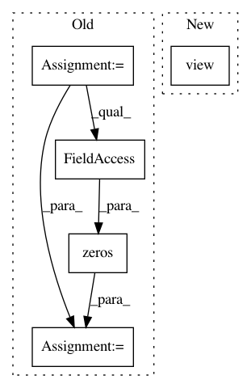

4d6aeeca8a6397fb0c2ce1aa0679155c21c6cbbb,pytorch/pytorchcv/models/isqrtcovresnet.py,Triuvec,forward,#Any#Any#,115
Before Change
x = input
batch_size = x.data.shape[0]
channels = x.data.shape[1]
x = x.reshape(batch_size, channels * channels)
identity = torch.ones(channels, channels).triu().reshape(channels * channels)
index = identity.nonzero()
y = torch.zeros(batch_size, channels * (channels + 1) // 2, device=x.device).type(x.dtype)
y = x[:, index]
ctx.save_for_backward(input, index)
return y
After Change
batch, cols, rows = x.size()
assert (cols == rows)
n = cols
triuvec_inds = torch.ones(n, n).triu().view(n * n).nonzero()
// assert (len(triuvec_inds) == n * (n + 1) // 2)
x_vec = x.reshape(batch, -1)
y = x_vec[:, triuvec_inds]
In pattern: SUPERPATTERN
Frequency: 3
Non-data size: 5
Instances
Project Name: osmr/imgclsmob
Commit Name: 4d6aeeca8a6397fb0c2ce1aa0679155c21c6cbbb
Time: 2019-03-03
Author: osemery@gmail.com
File Name: pytorch/pytorchcv/models/isqrtcovresnet.py
Class Name: Triuvec
Method Name: forward
Project Name: osmr/imgclsmob
Commit Name: 4d6aeeca8a6397fb0c2ce1aa0679155c21c6cbbb
Time: 2019-03-03
Author: osemery@gmail.com
File Name: pytorch/pytorchcv/models/isqrtcovresnet.py
Class Name: Triuvec
Method Name: backward
Project Name: hunkim/PyTorchZeroToAll
Commit Name: 55b880469ced115de9949d5d25ff835dabbb2caa
Time: 2017-11-08
Author: hunkim@gmail.com
File Name: 13_2_seq2seq_att.py
Class Name:
Method Name: translate